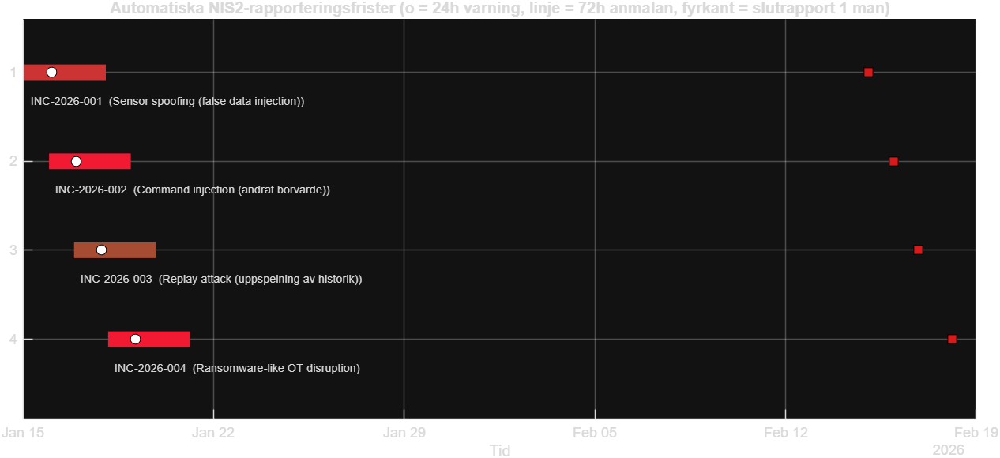

| ID | Scenario | Allvar | Detekterad | NIS2 24h | NIS2 72h | Slutrapport | GDPR | Sak.skydd | Anmalan |
|---|---|---|---|---|---|---|---|---|---|
| INC-2026-001 | Sensor spoofing (false data injection) | 4/5 | 2026-01-15 01:05 | 2026-01-16 01:05 | 2026-01-18 01:05 | 2026-02-15 01:05 | Nej | Nej | oppna |
| INC-2026-002 | Command injection (andrat borvarde) | 5/5 | 2026-01-15 23:05 | 2026-01-16 23:05 | 2026-01-18 23:05 | 2026-02-15 23:05 | Nej | Ja (skyndsamt) | oppna |
| INC-2026-003 | Replay attack (uppspelning av historik) | 3/5 | 2026-01-16 21:05 | 2026-01-17 21:05 | 2026-01-19 21:05 | 2026-02-16 21:05 | Nej | Nej | oppna |
| INC-2026-004 | Ransomware-like OT disruption | 5/5 | 2026-01-18 03:05 | 2026-01-19 03:05 | 2026-01-21 03:05 | 2026-02-18 03:05 | Ja | Ja (skyndsamt) | oppna |

Vid detektion klassas varje incident automatiskt (typ, allvar, berorda regelverk), tidsfrister beraknas och anmalningsdokument fylls i. NIS2/cybersakerhetslagen: tidig varning inom 24 h, anmalan inom 72 h, slutrapport inom en manad till MSB. GDPR: anmalan till IMY inom 72 h vid personuppgiftsincident. Sakerhetsskydd: skyndsam anmalan till tillsynsmyndighet.
Syntetisk demonstration. Mallarna ar forenklade och ersatter inte officiella anmalningsformular.